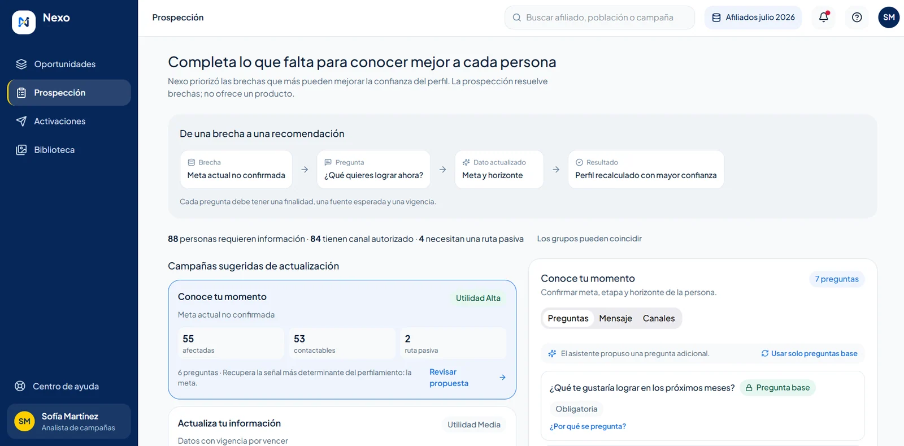
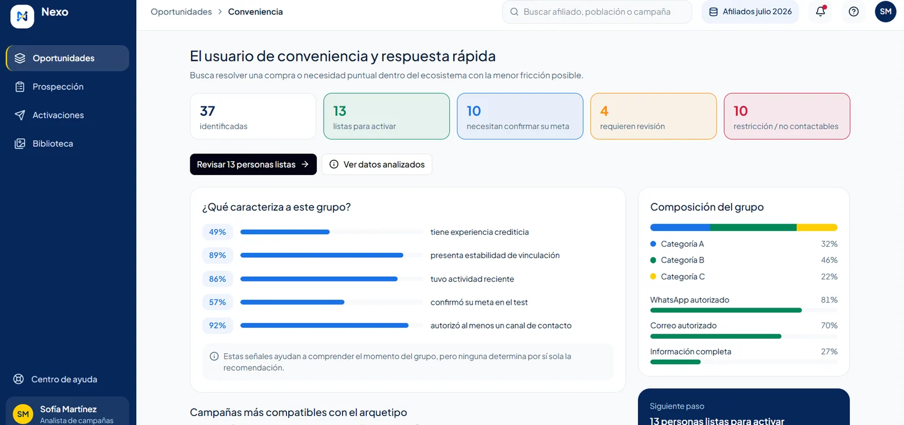
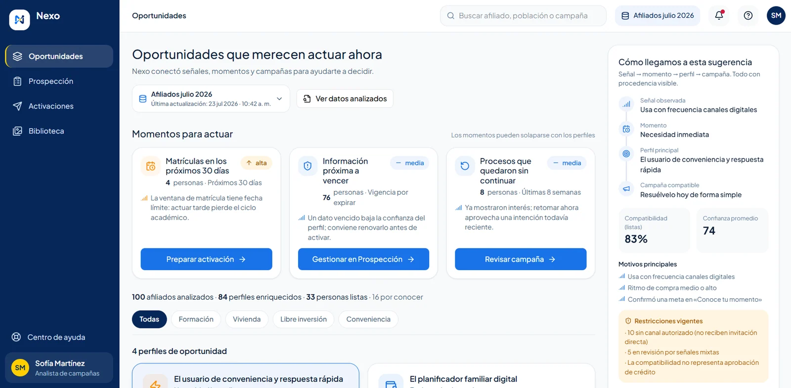
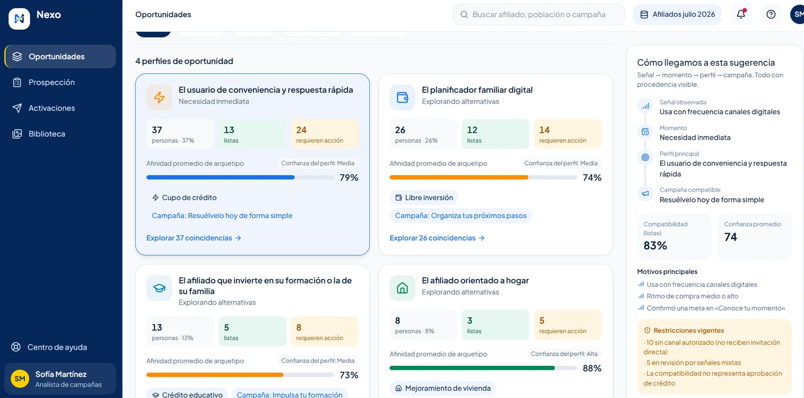
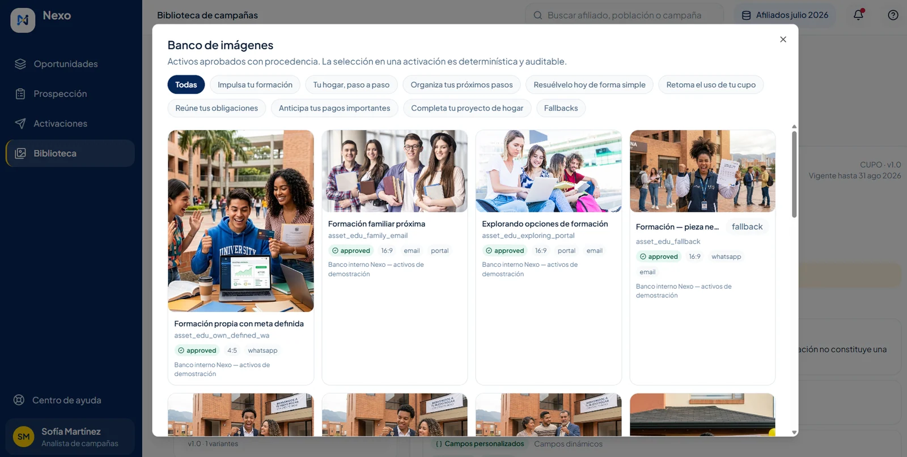
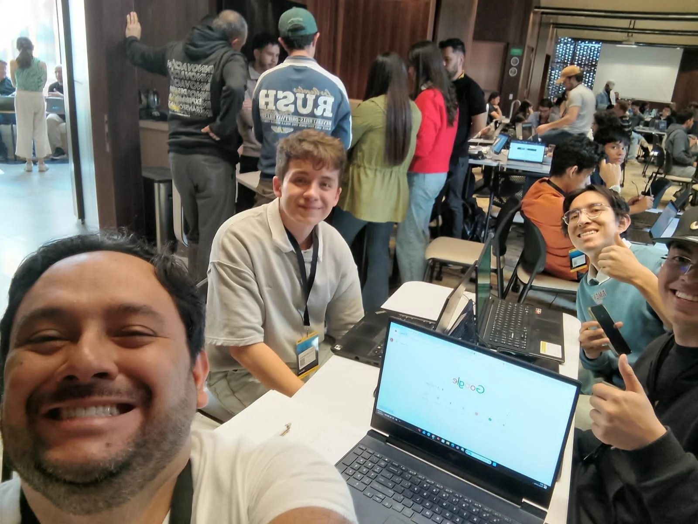
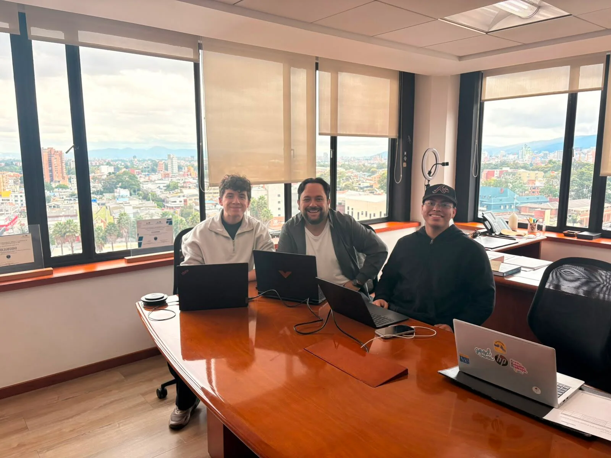

Nexo



Tipo de proyecto
Hackathon
Reto de Colsubsidio
Equipo
Equipo de 4 personas
Yo incluido: desarrollo, datos y producto
Rol
Producto, diseño y front-end
Idea de producto y desarrollo con vibe coding
Duración
4 días
Hackathon en tiempo récord
Resumen
Nexo es una plataforma de crédito hiperpersonalizado para Colsubsidio: cruza los datos que la entidad ya tiene con las metas que la propia persona declara, para ofrecer crédito explicable en el momento justo. Lo desarrollamos en un hackathon, en tiempo récord, con un equipo de cuatro personas.
Idea de producto
Lideré la definición del producto: a quién le habla Nexo y qué decisión habilita para el negocio.
Diseño
Los flujos y las pantallas del analista, con un sistema de componentes y estados bien resueltos.
Desarrollo front-end
Del diseño al código funcional con vibe coding, entre Figma Make y Claude Code.
Problema
Colsubsidio tiene 1,5 millones de afiliados, pero solo 250.000 usan crédito. Hoy, un joven y una madre reciben el mismo mensaje genérico, que ignora su momento de vida y sus metas.
AFILIADO
El crédito se vive como deuda
Las ofertas ignoran su momento y sus verdaderas metas, así que el crédito se ve como una deuda estresante y no como un impulso.
NEGOCIO
Datos sin intención
La entidad tiene la data operativa (27 variables por afiliado), pero le falta la capa de intención para hacer match y colocar de forma efectiva.
H1 · Descubribilidad y UX
Un onboarding gamificado
Con «Conoce tu momento» en lugar de formularios densos baja la fricción, y las personas ceden datos (Open Finance, Nequi) a cambio de desbloquear metas.
H2 · Relevancia y explicabilidad
Perfilar sin cajas negras
Cruzando la data observada con la declarada, el sistema ubica a cada persona en uno de 4 arquetipos, de forma determinista y explicable.
H3 · Gestión del analista
Campañas sin revisar uno a uno
Una interfaz centralizada permite gestionar oportunidades masivas hiperpersonalizadas sin revisar registros individuales.
Sprint
El hackathon obligaba a decidir rápido y a descartar lo que no cabía. Así fue el recorrido.
Día 1
Descubrimiento y pivote
Vimos que un modelo monolítico de evaluación crediticia en cuatro días era inviable y no resolvía el problema humano de la oferta genérica. Pivotamos de un recomendador de créditos a un panel interno para los analistas (Co-Pilot) y un flujo «zero-touch» para el afiliado, pensado como un desbloqueador de metas.
Días 1–2
Arquitectura de la confianza
Separamos la información en tres capas: lo que Colsubsidio ya sabe, lo que Nexo interpreta y lo que la persona declara voluntariamente. Creamos un módulo de scoring aislado y determinista que asigna a cada afiliado a un arquetipo de forma explicable.
Días 2–3
Diseño y vibe coding
Tomé los requerimientos y empecé a maquetar con el Design System de Colsubsidio: tokens de color, tipografía Inter y componentes estructurados. Para llegar a tiempo, traduje la lógica de negocio y los diseños a interfaces funcionales asistido por IA.
Día 4
Consolidación y pitch
Conectamos las pantallas a 100 registros de un CSV sintético en lugar de datos de diseño y verificamos la consistencia numérica en todas las vistas. Pulimos el pitch para vender una narrativa y no solo código.
Diseño
El pivote dejó dos frentes: una experiencia «zero-touch» para el afiliado y un Co-Pilot para el analista de campañas. Yo me concentré en las pantallas del analista, donde cada sugerencia muestra de dónde viene: señal, momento, perfil y campaña.


Para no ser invasivos, separamos qué sabe la entidad, qué interpreta Nexo y qué declara la persona.
01
Lo que Colsubsidio ya sabe
Los datos internos, cargados desde un CSV.
02
Lo que Nexo interpreta
Un scoring aislado y determinista, con reglas transparentes.
03
Lo que la persona declara
Voluntariamente, con el test «Conoce tu momento» y Open Finance (Nequi).
P
El planificador familiar digital
H
El afiliado orientado a hogar
E
El afiliado que invierte en su formación o la de su familia
C
El usuario de conveniencia y respuesta rápida
Desarrollo
Para tener un producto funcional en días adoptamos el vibe coding, es decir, desarrollo front asistido por IA. Yo lideré el front-end y el producto, y trabajé entre Figma Make y Claude Code para pasar del diseño a las interfaces, integrándome con el equipo de arquitectura y backend.
01
Diseño basado en componentes
Con los tokens y la tipografía del Design System de Colsubsidio, y una arquitectura orientada a eventos.
02
Cinco pantallas clave
Las del analista, con un manejo riguroso de estados: carga, vacío, error y mixto.
03
Datos reales, no de maqueta
El último día recableamos el front para que consumiera los 100 registros del CSV sintético.
04
Coherencia numérica
Verificamos que las cifras fueran consistentes en todas las vistas antes del pitch.
Resultados
Nexo llegó a una demo funcional y tuvimos la oportunidad de presentar el proyecto directamente a la junta directiva de Colsubsidio, en sus oficinas. En el pitch no vendimos solo código: contamos el problema, la explicabilidad de Nexo y cómo el producto escala combinando ingeniería de datos con visión humana.
«Colsubsidio tiene 1,5 millones de afiliados y solo 250.000 usan crédito. Hoy, un joven y una madre reciben el mismo SMS genérico.»
Junta
Presentamos el proyecto a la junta directiva de Colsubsidio, en sus oficinas.
5 pantallas
Del analista, con estados de carga, vacío, error y mixto.
100 registros
De un CSV sintético alimentando todas las vistas.
El impacto demostrable es reemplazar un análisis manual e ineficiente por un sistema que aporta una capa humana escalable. La visión a futuro es un piloto con integración real a APIs bancarias (Open Finance) para convertir prospectos en «sueños cumplidos».

El equipo durante el hackathon.

Presentación del proyecto en las oficinas de Colsubsidio.
Reflexión
Nexo me enseñó dos cosas que no se aprenden en un salón de clase. Aprendí cómo funciona el sector bancario y, sobre todo, cómo trabajar con gente de otros oficios.
01
El sector bancario
Entender cómo se usan los datos para perfilar a los usuarios y cómo traducir ese perfilamiento en un producto.
02
Equipos multidisciplinarios
Trabajar con desarrolladores, científicos de datos y product managers fue un gran aprendizaje.